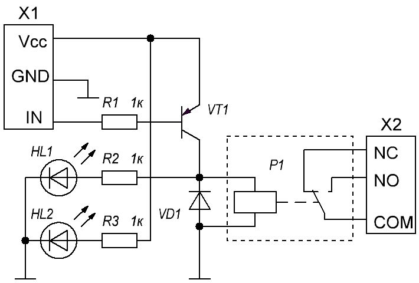
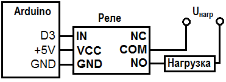
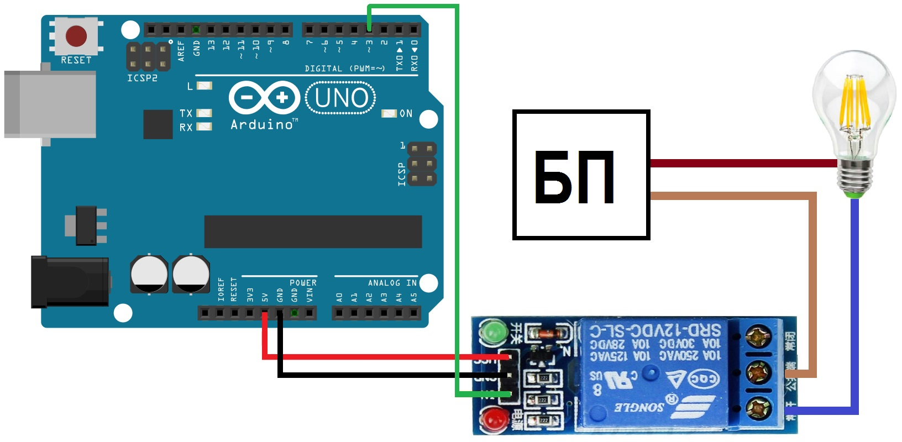

Подключение реле к Arduino
Реле — это устройство, предназначенное для замыкания или размыкания электрической цепи при заданных изменениях электрических или неэлектрических входных воздействий. Реле позволяет подключить устройства, работающие в режимах с относительно большими токами или напряжения. Мощные насосы, двигатели, лампочки накаливания нельзя напрямую подключить к плате Arduino. Поэтому для управления коммутацией таких устройств в проектах с Arduino применяют реле.
Подробнее о реле можно узнать здесь.
Наиболее распространенное реле для Arduino выполняется в виде модуля, например, SONGLE SRD-05VDC-SL-C. Его внешний вид и принципиальная схема приведены на рисунке 1.


Основные технические параметры модуля SONGLE SRD-05VDC-SL-C:
При подключении реле к источнику питания 5В (VCC — "+" и GND — "-") контакты "NC" и "COM" замкнуты, контакты "NO" и "COM" разомкнуты. При этом загорается светодиод красного цвета (HL2 на рис. 1).
Для переключения реле в другое положение, необходимо вывод IN подключить к GND. Транзистор открывается и реле срабатывает. При этом контакты "NC" и "COM" размыкаются, контакты "NO" и "COM" замыкаются. Свечение светодиода зеленого цвета (HL1 на рис. 1) показывает, что произошло замыкание контактов.
В данном модуле не реализована гальваническая развязка, вывод IN подключен напрямую к управляющему транзистору.
Диод VD1 защищает микроконтроллер от обратного напряжения, возникающего при снятии напряжения на катушке.
Схема подключения нагрузки и реле к Arduino показана на рисунке 2.

В качестве примера рассмотрим управление включением/выключением мощной лампы с помощью реле и Arduino (рис. 3).

Скетч
int PIN_RELE=5; // Указываем пин подключенный к реле void setup() { pinMode(PIN_RELE, OUTPUT); // Объявляем пин реле как выход digitalWrite(PIN_RELE, HIGH); // Выключаем реле } void loop(){ digitalWrite(PIN_RELE, LOW); // Включаем реле delay(5000); digitalWrite(PIN_RELE, HIGH); // Отключаем реле delay(5000); }
Источники
arduinomaster.ru - Подключение реле к Ардуино